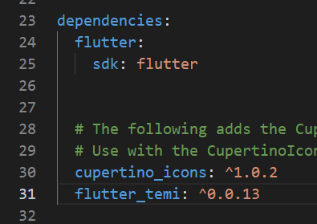
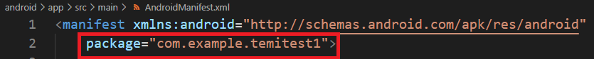
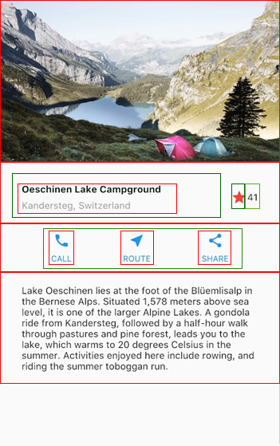

內容涵蓋
- 建立專案
- 主程式-main.dart
- 頁面架構與Widgets tree
- StatelessWidget-不具狀態widget
- StatelfulWidget-具狀態widget
建立專案
請固定將不同專案至於專屬檔案夾中，例如：建立temiprojects檔案夾，之後將所有課程專案均至於此檔案夾中，專案建立步驟如下：
- 請開啟命令提示字元視窗
- 進入Temi project檔案夾(例如：cd d:/temiprojects
- 輸入 flutter create project名稱 來建立project，例如(flutter create temiproject1)，Flutter會在Temi project檔案夾中建立專案名稱檔案夾並建立所有相關程式
- 開啟 VS Code編輯器利用開啟資料夾並選擇剛建立Temi project檔案夾
- 開啟Flutter專案設定檔(pubspec.yaml)並在如下圖位置貼上flutter_temi: ^0.0.13，之後選擇儲存，電腦會下載flutter_temi套件，或是點選右上角下載按鍵也可以 
- 開啟專案中android-app-build.gradle，修改，compileSdkVersion 30，minSdkVersion 22，targetSdkVersion 30
- 開啟專案中android-app-src-main-AndroidManifest.xml，在如下圖位置加入下列設定
- 在頁面程式一開始匯入flutter_temi模組(import 'package:flutter_temi/flutter_temi.dart';
- 開發完畢後，開啟命令提示字元視窗並進入專案目錄中輸入flutter build apk建立專案apk檔，專案apk檔會在專案資料夾build-app-outputs-apk-release中
- 開啟Temi設定進入開發人員設定：取得Temi連接ip後，開啟命令提示字元視窗輸入adb ip:5555，確認連接後，輸入adb install apk檔名.apk，解除安裝請輸入adb uninstall 專案封裝名稱，專案封裝名稱在中android-app-src-main-AndroidManifest.xml中開始package值(如下圖) 
<meta-data
android:name="com.robotemi.sdk.metadata.SKILL"
android:value="專案名稱"/>
第一個專案
開啟命令提示字元視窗並進入專案擺放目錄輸入flutter create --org tw.edu.stust.mis 專案名稱，之後請使用Vs Code開啟專案擺放目錄中專案名稱資料夾，按照上述步驟修改專案後，請用下列程式取代專案目錄lib-main.dart內容
import 'package:flutter/material.dart';
import 'package:flutter_temi/flutter_temi.dart';
void main() {
runApp(MyApp());
}
class MyApp extends StatelessWidget {
// This widget is the root of your application.
@override
Widget build(BuildContext context) {
return MaterialApp(
title: 'Flutter Demo',
theme: ThemeData(
primarySwatch: Colors.blue,
),
home: MyHomePage(),
);
}
}
class MyHomePage extends StatefulWidget {
@override
_MyHomePageState createState() => _MyHomePageState();
}
class _MyHomePageState extends State<MyHomePage> {
@override
Widget build(BuildContext context) {
return Scaffold(
appBar: AppBar(
title: Text(''),
),
body: Center(
child: ElevatedButton(
onPressed: () async {
FlutterTemi.temiSpeak('Hello 我是Temi');
},
child: Text('Hello 我是Temi'))),
);
}
}
接下來進行程式說明。
- Flutter預設使用Android Material設計，所以利用 import 匯入material套件material.dart，請注意：iOS APP也可以使用Material設計，只是場景與操作會與預設iOS APP不同。之後匯入Temi模組import 'package:flutter_temi/flutter_temi.dart';
- 主程式main執行runApp，runApp語法為 runApp(const MyApp)，MyApp為一不具狀態Widget，Flutter頁面均由 Widgets 所組成，Widget 為程式類別(class)，具狀態或不具狀態Widget稍後將進行說明。
- MyApp Widget透過Widget build方法傳回MaterialApp widget，而MaterialApp widget的 home 屬性設定MyHomePage widget為預設頁面
- MyHomePage唯一具狀態widget，具狀態/不具狀態widget在接下內容進行說明，_MyHomePageState類別顯示按鈕，按鈕點選執行Temi說話功能，請注意：所有Temi動作均為非同步動作，因此必須藉由async ... await來執行
頁面架構與Widgets tree
Flutter頁面由widgets所構成，widget為Dart類別(class)，Flutter透過組合不同的widgets來建立頁面。以下圖為例：頁面以縱向來呈現，由上而下包含一張圖片、橫排字、橫排圖示按鈕與文字與一塊文字。這樣的頁面架構可由欄(Column)widget包含四個小孩(children)，欄(Column)widget內容將以縱向呈現，第一個小孩為圖片，第二個小孩為橫向列(row)包含3個小孩，而橫向列的第一個小孩為縱向欄(column)包含兩個小孩。如此類推我們將頁面分解為如圖的widgets樹，版面設計並無一定的規則，但是儘量朝向淺架構(shallow)、封裝(encapsulation)、容易維護方向設計。


頁面widget可具狀態(stateful)或不具狀態(stateless)兩種。具狀態widget允許動態重新顯示widget內容值，也就是說widget內容是可以動態變動。不具狀態(stateless)widget顯示後就部會改變。每個widget一定會有一個build函數，用於將現在的widget加入project widgets架構中。
StatelessWidget-不具狀態widget
當widgets內容為靜態(固定不變)則Widget可設定為Stateless(不具狀態)widgets，Stateless(不具狀態)widget，首先定義不具狀態widget的類別名稱如MyStatelessClass，之後在類別建構式中如有代入參數，則需定義代入參數，最後覆寫(override)build函數來建立顯示內容。
程式架構說明
//不具狀態widget設定格式
class MyStatelessClass extends StatelessWidget {
const MyStatelessClass({Key? key,this.inarg1}) : super(key: key);
final 資料類型 inarg1;
@override
Widget build(BuildContext context) {
return 使用者設定widget;
}
}
StatefulWidget-具狀態widget
Stateful(具狀態)widget一定包含兩個類別，第一個類建立使用者設定類別名稱如StatefulClass來定義具狀態類別StatefulWidget，建構式與代入參數同不具狀態widget，在這個類別中僅利用createState()來建立狀態類別如_MyStatefulClassState。第二個類別為使用者在第一個類別中設定的狀態類別，用widget(build)建立widget並使用、initState設定類別起始動作與setState來觸發狀態事件。
程式架構說明
class MyStatefulClass extends StatefulWidget {
MyStatefulClass({Key? key, this.inarg1}) : super(key: key);
final 資料類型 inarg1;
@override
_MyStatefulClassState createState() => new _MyStatefulClassState();
}
class _MyStatefulClasstState extends State<MyStatefulClass> {
資料類型 attr1;
@override
initState() {
super.initState();
起始動作;
}
//setState用於改變狀態，會讓widget傳回build方法來反映變化
void myfunction1() {
setState((){
發布狀態更新;
});
}
@override
Widget build(BuildContext context) {
return 使用者設定widget;
}
}